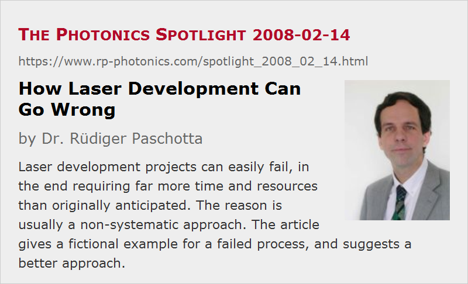

How Laser Development Can Go Wrong
Posted on 2008-02-14 as a part of the Photonics Spotlight (available as e-mail newsletter!)
Permanent link: https://www.rp-photonics.com/spotlight_2008_02_14.html
Author: Dr. Rüdiger Paschotta, RP Photonics Consulting GmbH
Abstract: Laser development projects can easily fail, in the end requiring far more time and resources than originally anticipated. The reason is usually a non-systematic approach. The article gives a fictional example for a failed process, and suggests a better approach.

Ref.: encyclopedia article on laser development
Much of the content of this Photonics Spotlight article was previously part of the encyclopedia article on laser development. I decided to move it here, as the Spotlight appears to be a more suitable place.
Let us deal with a fictional story, which will probably remind many of what they experienced in real life. A diode-pumped passively mode-locked solid-state laser needs to be developed. A common and apparently sensible but nevertheless risky approach is illustrated in the following:
- The engineering group starts with setting up a wish list of performance parameters, followed by a short period of planning by the responsible engineer, based on experience and rough estimates. Without having a detailed plan yet, the engineer then procures the most important parts for a prototype, trying to save lead time. Not knowing various parameters, he tries to avoid delays by ordering several different versions of output couplers, resonator mirrors with different curvature radii, and SESAMs. This is based on the experience that ordering a few parts which will finally not be used is less expensive than having the whole project delayed by ordering some components too late.
- When the parts have arrived, he then starts building the prototype with a step-by-step approach, beginning with the pump source (e.g. a laser diode), followed by the pump optics, then positioning the laser crystal in the pump beam and building a first simple resonator – not yet with the SESAM included, just for checking the output power and beam quality.
- First problems occur here in the form of insufficient pump absorption. This is simply fixed by exchanging the crystal with a thicker one. Unfortunately, the quasi-three-level gain medium now has a preference for a too long lasing wavelength, which is however reduced by somewhat increasing the output coupler transmission.
- Now the laser resonator is easily supplemented with some additional folding mirrors, so that a prism pair for dispersion compensation can be inserted. The SESAM is now used as an end mirror, next to a focusing mirror of a kind which proved appropriate in earlier experiments. Indeed the laser switches from continuous-wave operation to a pulsed regime, however with the pulse duration being too long and – more disturbing – the pulse parameters exhibiting strong fluctuations. Weeks and months pass with experimental attempts to fix these problems. Not knowing the exact reason of the problems, the engineer takes a hands-on approach and tries different combinations of SESAM, output coupler transmission and radius of curvature of the focusing mirror. This eventually leads to a configuration which generates stable pulses, but the pulse duration can not be reduced to the desired level. A higher modulation depth of the SESAM has proven helpful, but only up to the point where Q-switching instabilities set in.
- At the point where either the frustration gets too strong or the number of remaining ideas approaches zero, the crises of the project becomes obvious, and additional help is ordered. Within two days, an experienced laser designer (in house or hired as a consultant) carefully analyzes the situation and finds out that the design goals can only be reached by reducing the mode size in the laser crystal, and by using a thinner laser crystal with higher doping concentration. This means that the pump optics have to be revised (using some optics which are currently not available), and the whole prototype has to be built again nearly from scratch. At the same time, some overall design changes allow operation of the SESAM in a safer operating regime, avoiding later problems with long-term degradation, and reduce the alignment sensitivity. Finally, a well working laser results from this work – but nine months behind the schedule, and with significant extra cost mainly due to the extra man months spent by the engineer and the infrastructure which was poorly used during that time.
- If life is particularly cruel, it then turns out that in the meantime a competing company launched a superior product based on a novel kind of laser crystal, which is more suitable…
Note that the taken approach included sensible step-by-step procedures, definitely made use of previous experience, and did not involve obvious mistakes. Why has it nevertheless worked so badly in this situation, which will surely look very familiar to many engineers? The main reasons are
- that even an apparently sensible step-by-step procedure fails when various aspects strongly influence each other – as it is often the case with lasers,
- that the correction of some mistakes (e.g. concerning the pump spot size) enforce changes which make previous work useless and/or reintroduce other problems,
- and that it is very time-consuming to try out many combinations of measures, which cannot be assessed by testing them separately.
Obviously we badly need an improved procedure for such development tasks. This is what the article on laser development presents, and does not need to be repeated here.
An interesting additional question is why despite all these advantages it is still very common particularly in smaller laser companies to muddle through, apparently ignoring the painful consequences. Some possible reasons are
- that it is very hard not to underestimate certain problems in the beginning,
- that it takes a considerable degree of discipline to properly finish design work (without leaving nasty questions unanswered) before starting in the lab,
- that the cost of using an experienced expert (particularly an external one) is in the initial phase felt much more directly than the possibly much greater cost at a later stage,
- that it can be difficult to admit that certain expertise is not yet sufficiently developed in house (particularly if a climate of openness and trust is not established),
- that psychologically many people have a tendency either to be over-confident that experienced trouble can be safely avoided in the future without implementing profound changes, or to resign and accept certain problems as being inevitable (“that's life”), in both cases making it difficult to learn from experience.
There are ways, however, to deal with these obstacles. For sure, the really successful manufacturers have learned how to arrange a well working development process.
It is clear that except for rather trivial cases, a well structured development process is absolutely vital for a laser company. It does require contributions from a very experienced expert, who may have to be hired as an external consultant and will in any case spend a limited amount of time at a considerably higher salary per hour. However, overall this approach is nevertheless much cheaper and also generates revenue at an earlier stage. That temporal aspect is really very important – see the earlier article on time to market.
This article is a posting of the Photonics Spotlight, authored by Dr. Rüdiger Paschotta. You may link to this page and cite it, because its location is permanent. See also the RP Photonics Encyclopedia.
Note that you can also receive the articles in the form of a newsletter or with an RSS feed.
Questions and Comments from Users
Here you can submit questions and comments. As far as they get accepted by the author, they will appear above this paragraph together with the author’s answer. The author will decide on acceptance based on certain criteria. Essentially, the issue must be of sufficiently broad interest.
Please do not enter personal data here; we would otherwise delete it soon. (See also our privacy declaration.) If you wish to receive personal feedback or consultancy from the author, please contact him e.g. via e-mail.
By submitting the information, you give your consent to the potential publication of your inputs on our website according to our rules. (If you later retract your consent, we will delete those inputs.) As your inputs are first reviewed by the author, they may be published with some delay.
|  |
If you like this page, please share the link with your friends and colleagues, e.g. via social media:
These sharing buttons are implemented in a privacy-friendly way!